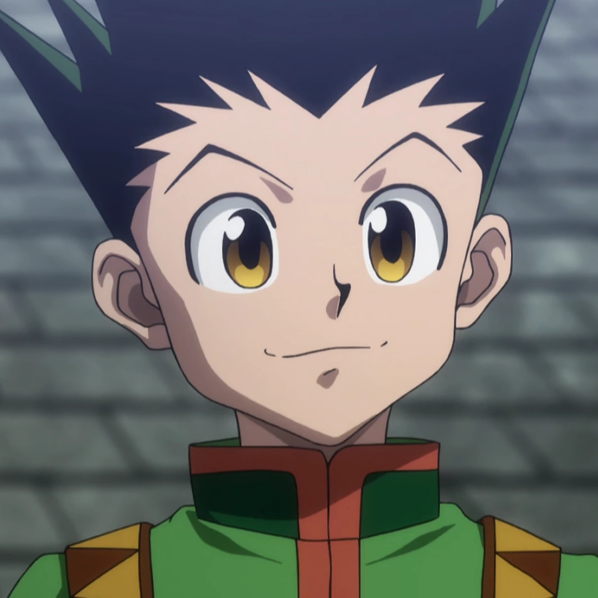

Tipos de Nen

Fortificação
Aumentam as habilidades físicas. Gon é um exemplo clássico.
Emissão
Emissores projetam seu Nen à distância. Leorio é um bom exemplo disso.
Especialização
Usuários com habilidades únicas que não seguem as regras normais do Nen. Kurapika, com olhos escarlates, é um exemplo.

Transmutação
Killua Zoldyck transforma sua aura em eletricidade.
Conjuração
Invoca objetos com Nen. Kaito usa o "Crazy Slots", um palhaço que invoca armas.

Manipulação
Permite controlar seres ou objetos. Illumi usa agulhas imbuídas de Nen.